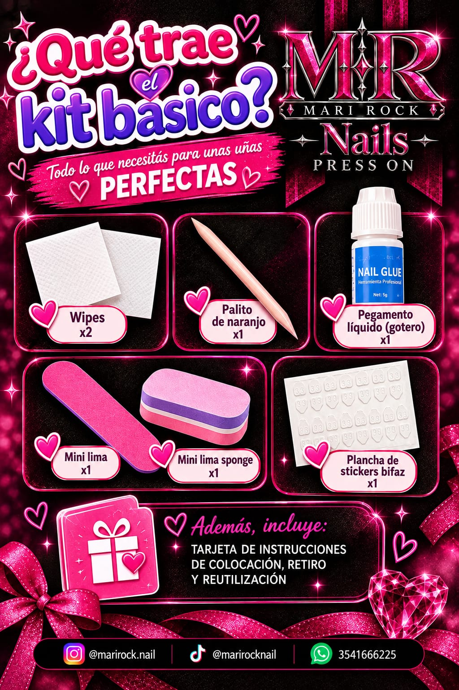

GUÍA DE APLICACIÓN, RETIRO Y CUIDADOS
¡BIENVENID@S!
Gracias por elegir mis press on nails. Esta guía te ayuda a lograr una aplicación correcta y sencilla, una mejor duración y a mantener tus uñas naturales sanas. Seguí cada paso con calma y paciencia.
ANTES DE COMENZAR…
Antes de colocar tus press on es muy importante preparar bien la uña natural. Muchos problemas de duración vienen de pequeños detalles que hacen una gran diferencia.

¡TIPS IMPORTANTES!
VERIFICAR TALLES
Antes de empezar, sacá todas las press de la caja y probalas sin pegamento. Si alguna no calza, limá suavemente los bordes hasta que encaje bien.
ESPERÁ DESPUÉS DE MOJAR TUS MANOS
Si venís de bañarte, lavar platos o usar crema, esperá al menos 1 hora. La humedad impide una buena adhesión.
CANTIDAD DE PEGAMENTO
El exceso hace que la press resbale. La cantidad ideal es una capa fina y pareja.
PREPARACIÓN
PASO 1: LAVÁ Y SECÁ TUS MANOS
Asegurate de secarlas por completo.
PASO 2: EMPUJÁ LAS CUTÍCULAS
Con el palito de naranjo, empujalas suavemente hacia atrás.
PASO 3: LIMÁ EL BRILLO
Pasá la mini lima o la sponge sobre la uña para sacar el brillo natural.
PASO 4: LIMPIÁ CON EL WIPE
Retirá restos de polvo y grasa. No toques la uña después.
COLOCACIÓN DEL TIP
Con pegamento: poné una capa fina en tu uña y otra en la parte trasera de la press. Con sticker bifaz: pegalo en la uña y retirá el film.
Alineá desde la cutícula, apoyá con suavidad y presioná firme entre 20 y 30 segundos. Evitá el agua durante la primera hora.
RETIRO
Remojá tus manos en agua tibia con jabón de 10 a 15 minutos. Levantá la press con el palito de naranjo, sin tirar ni forzar. Si ofrece resistencia, remojá un rato más.
Reutilización: limpiá los restos de pegamento, guardalas en su caja y volvé a usarlas.
CUIDADOS
- Usá guantes para lavar platos y limpiar.
- No uses tus uñas como herramienta.
- Hidratá las cutículas con aceite.
- Evitá el agua muy caliente por tiempos largos.